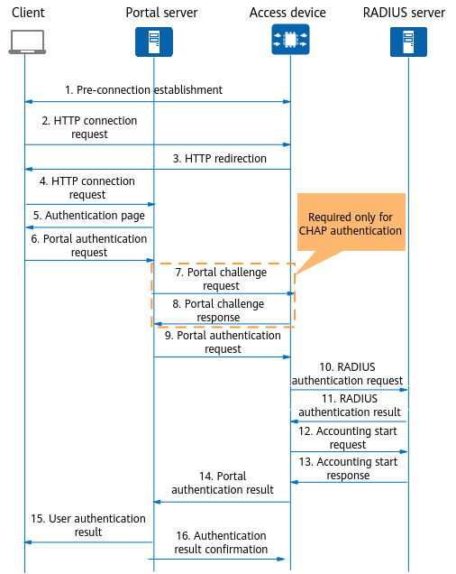

Portal-based Portal Authentication Process
Figure 1 shows the packet exchange process when a user goes online.
Figure 1 Portal-based Portal authentication process
Before authentication, the client establishes a pre-connection with the access device. That is, the access device creates a user online entry for the client, and grants the client access to some network resources before the authentication succeeds.
The client initiates an HTTP connection request.
The access device receives the HTTP connection request packet and determines whether to permit it. If the HTTP packet is destined for the Portal server or authentication-free network resources, the access device permits it. If the HTTP packet is destined to other addresses, the access device sends the URL of the Portal authentication page to the client.
The client initiates an HTTP connection request to the Portal server based on the obtained URL.
The Portal server returns the Portal authentication page to the client.
- The user enters the user name and password on the Portal authentication page to initiate a Portal authentication request to the Portal server.
- (Optional) The Portal server sends a Portal challenge request packet (REQ_CHALLENGE) to the access device. This step is performed only when CHAP authentication is used between the Portal server and access device. If PAP authentication is used, steps 7 and 8 are skipped.
- (Optional) The access device sends a Portal challenge response packet (ACK_CHALLENGE) to the Portal server.
- The Portal server encapsulates a Portal authentication request packet (REQ_AUTH) with the entered user name and password and sends the packet to the access device.
- The access device sends a RADIUS authentication request packet (Access-Request) to the RADIUS server based on the obtained user name and password.
The RADIUS server authenticates the user name and password. If authentication succeeds, the RADIUS server sends an authentication accept packet (Access-Accept) to the access device. If authentication fails, the RADIUS server sends an authentication reject packet (Access-Reject) to the access device.
The Access-Accept packet also contains user authorization information because RADIUS combines authentication and authorization.
- The access device permits or denies the user access based on the obtained authentication result. If user access is permitted, the access device sends an accounting start request packet, Accounting-Request(Start), to the RADIUS server.
- The RADIUS server replies with an accounting start response packet, Accounting-Response(Start), starts accounting, and adds the user to the local online user list.
- The access device returns the Portal authentication result (ACK_AUTH) to the Portal server and adds the user to the local online user list.
- The Portal server sends the authentication result to the client to notify the user of successful authentication and adds the user to the local online user list.
- The Portal server sends an authentication acknowledgment packet (AFF_ACK_AUTH) to the access device.